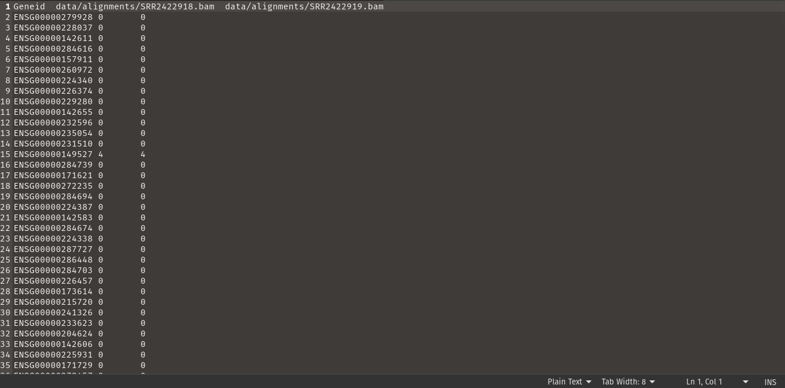

A Comprehensive RNA-Seq Upstream Pipeline in Bash with FastQC, MultiQC, Trimmomatic, HISAT2, SAMtools, and FeatureCounts
With the advent of next-generation sequencing technology, biological data proliferation has soared dramatically. This surge encompasses data generated across various biological scales. This tutorial specifically targets the transcriptomic scale, which encompasses diverse RNA molecules and encapsulates the intricate control mechanisms of gene expression.
RNA sequencing data is typically stored in fastq format (refer to the article for details on fastq format). These files typically comprise short RNA reads awaiting alignment to the reference transcriptome. To sequence genomes and transcriptomes of humans and other organisms for comparison, reference genomes have been assembled for each species.
This tutorial will cover the assessment of read quality, read cleaning, alignment to the reference transcriptome, and read quantification. Each term will be thoroughly explained in its corresponding section below. We will construct a pipeline integrating various bioinformatics tools to perform each task. This pipeline will be implemented in a bash script and executed via the command line.
The necessary tools for pipeline development include FastQC, MultiQC, Trimmomatic, HISAT2, Samtools, and FeatureCounts. The installation process for these tools will be briefly outlined, but first, I will explain how to obtain a sample dataset for this tutorial.
How to Download Data
A substantial amount of RNA sequencing data is regularly deposited on the Gene Expression Omnibus (GEO) database. Various research groups analyze biological samples and share their data with the public. To learn more about GEO, visit https://www.ncbi.nlm.nih.gov/geo/.
In this tutorial, I utilize the dataset “RNAseq in Alzheimer’s Disease patients” with accession GSE53697. While the data can be manually downloaded by clicking the link on each sample and following the subsequent download instructions, I will streamline the process using the SRA-toolkit to automate downloads. Additionally, I will sub-sample the reads for each sample to reduce the data size for tutorial purposes.
Create a script named download_data.sh as follows:
#!/bin/bash
# Create a folder named "Reads" if it doesn't exist
mkdir -p Reads
# Array of SRR accession numbers
SRR_LIST=(
SRR2422918
SRR2422919
SRR2422920
SRR2422921
SRR2422922
SRR2422923
SRR2422924
SRR2422925
SRR2422926
SRR2422927
SRR2422928
SRR2422929
SRR2422930
SRR2422931
SRR2422932
SRR2422933
SRR2422934
)
# Loop through each accession number
for SRR in "${SRR_LIST[@]}"; do
echo "Downloading and extracting reads for $SRR..."
# Extract 1,000,000 reads from the SRA file
fastq-dump --split-files -X 100000 $SRR -O Reads
done
echo "Download and extraction complete."
The dataset comprises 17 samples, and the script download_data.sh is provided to facilitate the download process. Ensure the script is located in your current directory.
To maintain organization and conciseness, create a folder named of your choosing anywhere in your computer’s file system. All operations described in this tutorial should be conducted within this folder (directory). Subfolders will be created within the project folder to store various project data.
To maintain organization and conciseness, create a folder named of your choosing anywhere in your computer’s file system. All operations described in this tutorial should be conducted within this folder (directory). Subfolders will be created within the project folder to store various project data.
bash download_data.shFeel free to explore the download_data.sh script and adjust the subsample size (using the —X option) as needed. You may opt to download the complete data for each sample if your computer can handle the computational burden (approximately 16GB RAM) by omitting the —X option entirely. Otherwise, the current sample size is designed to ensure the pipeline runs smoothly on any machine with at least 4GB of RAM.
Install Tools
FastQC can be installed by following the instructions on the FastQC installation page. For Linux distributions, simply run sudo apt install fastqc in your terminal.
MultiQC can be installed by running pip install multiqc or conda install multiqc in your terminal.
Download the Trimmomatic binary to any location on your computer. Unzip the downloaded file and copy the .jar file and “adapters” folder to your project directory.
Visit the Hisat2 official page and follow the installation instructions. Hisat2 generates the genome index for the species being analyzed. You can download the human genome reference index by clicking here. Once downloaded, unzip the index and copy its contents to your project directory.
Samtools can be installed by following the instructions provided on the official website.
You can install featureCounts by running conda create -c bioconda -n featurecounts subread.
Quality Control
Before delving into the analysis, ensuring the quality of the sequencing data is crucial. Quality control (QC) helps identify issues such as sequencing errors, adapter contamination, or poor-quality reads that could affect downstream analysis. FastQC is a powerful tool for assessing sequencing data quality, providing detailed reports on metrics such as per-base sequence quality, GC content, and sequence duplication levels. MultiQC is handy for aggregating FastQC reports into a single, navigable HTML report.
FastQC reports can be generated from fastq, bam, or sam files, making it versatile across different stages of the pipeline. In this workflow, we’ll utilize FastQC before and after trimming the sequences to evaluate the impact of trimming on quality.
To assess the quality of a read, the command is simply:
fastqc sample.fastq -o output_directoryFastQC can process multiple fastq or alignment files independently. In the case of paired reads, each pair is assessed individually.
For this tutorial, we’ll build each step of the pipeline into a bash script. Create a bash script in your project directory (e.g., run_pipeline.sh), and ensure it’s executable with the shebang:
#!/bin/bashTo organize files, we’ll create separate directories for each project where the outputs will be stored. All output directories will be under the data directory. Here’s the script:
SECONDS=0
# Make necessary directories
mkdir data data/fastqc1 data/trimmed_reads data/fastqc2 data/alignments data/quant
echo "Output Directories created!!!"
duration=$SECONDS
echo "$(($duration / 60)) minutes and $(($duration % 60)) seconds elapsed."Run the script on your terminal to make it executable:
chmod +x run_pipeline.shThen execute:
./run_pipeline.shYou’ll see the script run in just a few seconds, and all subdirectories are created.
Now, let’s complete the script for the FastQC process. We’ll use a for loop in bash to process the quality of two samples:
#!/bin/bash
SECONDS=0
# Make necessary directories
mkdir data data/fastqc1 data/trimmed_reads data/fastqc2 data/alignments data/quant
echo "Output Directories created!!!"
count=0
for file in Reads/*_1.fastq; do
if [ "$count" -lt 2 ]; then
# Increment the count
((count++))
echo "Processing file: $file"
# Place your processing commands here
base=$(basename -s _1.fastq "$file")
# Run fastqc
fastqc "Reads/${base}_1.fastq" "Reads/${base}_2.fastq" -o data/fastqc1
else
break # Exit the loop after processing the first two files
fi
doneThen execute:
./run_pipeline.shThis script will execute FastQC on the first two samples in the Reads folder (four files since these are paired-end). The FastQC outputs are in the data/fastqc1 directory. You can explore the results by opening the HTML files. You should see something similar to this.
To compile all FastQC reports into one, use MultiQC:
multiqc data/fastqc1 -o data/multiqc1You can view a sample MultiQC report here.
Read Trimming
After QC, the next step is read trimming to remove any low-quality bases or adapter sequences that might affect downstream analysis. Trimmomatic is a versatile tool for read trimming, capable of handling various sequencing platforms and adapter types. Please refer to the Trimmomatic documentation for reference. The application for single-end and paired-end reads differs, and the code provided in this tutorial is for paired-end reads only.
To trim reads, add this chunk of code inside the for loop:
# Trimming reads
java -jar trimmomatic-0.39.jar PE "Reads/${base}_1.fastq" "Reads/${base}_2.fastq" \
"data/trimmed_reads/${base}.trimmed.paired.R1.fastq" "data/trimmed_reads/${base}.trimmed.unpaired.R1.fastq" \
"data/trimmed_reads/${base}.trimmed.paired.R2.fastq" "data/trimmed_reads/${base}.trimmed.unpaired.R2.fastq" TRAILING:10 -phred33 -threads 4Here’s the updated script:
#!/bin/bash
SECONDS=0
# Make necessary directories
mkdir data data/fastqc1 data/trimmed_reads data/fastqc2 data/alignments data/quant
echo "Output Directories created!!!"
count=0
for file in Reads/*_1.fastq; do
if [ "$count" -lt 2 ]; then
# Increment the count
((count++))
echo "Processing file: $file"
# Place your processing commands here
base=$(basename -s _1.fastq "$file")
# Run fastqc
fastqc "Reads/${base}_1.fastq" "Reads/${base}_2.fastq" -o data/fastqc1
# Run trimmomatic to trim reads with poor quality
java -jar trimmomatic-0.39.jar PE "Reads/${base}_1.fastq" "Reads/${base}_2.fastq" \
"data/trimmed_reads/${base}.trimmed.paired.R1.fastq" "data/trimmed_reads/${base}.trimmed.unpaired.R1.fastq" \
"data/trimmed_reads/${base}.trimmed.paired.R2.fastq" "data/trimmed_reads/${base}.trimmed.unpaired.R2.fastq" TRAILING:10 -phred33 -threads 4
echo "Trimmomatic finished running for ${base}!"
fastqc "data/trimmed_reads/${base}.trimmed.paired.R1.fastq" "data/trimmed_reads/${base}.trimmed.paired.R2.fastq" -o data/fastqc2
echo "Fastqc completed for ${base}"
else
break # Exit the loop after processing the first two files
fi
done
# Run MultiQC
multiqc data/fastqc1 -o data/multiqc1
# Run MultiQC on second Fastqc reports
multiqc data/fastqc2 -o data/multiqc2
duration=$SECONDS
echo "$(($duration / 60)) minutes and $(($duration % 60)) seconds elapsed."Notice that MultiQC is applied outside the for loop so that all FastQC reports are assembled into one. The code inside the for loop processes a single sample. After trimming reads, FastQC and MultiQC are applied again to assess the quality. Further details on quality control will be covered in a future tutorial.
Read Mapping/Alignment
Once the reads are trimmed and of high quality, the next step is to align them to a reference transcriptome. HISAT2 is a fast and sensitive aligner that efficiently maps RNA-seq reads to the reference genome or transcriptome. It builds a genome index for the reference species, enabling accurate alignment even for large genomes. In this tutorial, we’ve already downloaded pre-built genome indices.
HISAT2 implementation is straightforward. First, ensure that the genome index is downloaded and stored in the project directory. To align a sample to a reference transcriptome, you can use the following code:
# Run HISAT2 for alignment
hisat2 -q -x grch38/genome -1 "data/trimmed_reads/SRR2422918.trimmed.paired.R1.fastq" -2 "data/trimmed_reads/SRR2422918.trimmed.paired.R2.fastq" | samtools sort -o "data/alignments/SRR2422918.bam"Also, run the alignment for sample SRR2422919:
# Run HISAT2 for alignment
hisat2 -q -x grch38/genome -1 "data/trimmed_reads/SRR2422919.trimmed.paired.R1.fastq" -2 "data/trimmed_reads/SRR2422919.trimmed.paired.R2.fastq" | samtools sort -o "data/alignments/SRR2422919.bam"Notice that HISAT2 is run on the trimmed reads, which are more likely to be of good quality than untrimmed reads. Additionally, note the path grch38/genome. This is the path to your genome index, which you downloaded and unzipped into your project directory. Also, observe that samtools is used to sort the alignments.
This implementation is for paired reads only. For options regarding single-end reads, you can run the command:
hisat2 -hRead Quantification
After alignment, the final step is read quantification, where we estimate the abundance of each transcript in the sample. FeatureCounts is a popular tool for counting reads mapped to genomic features such as genes, exons, or transcripts. It assigns reads to features based on their alignment positions and generates count matrices that can be used for differential expression analysis and other downstream applications. In this exercise, we are counting genes since we will be performing gene expression analysis in the future.
To quantify reads, first, we need to download an annotation file. The Ensembl database contains such files. For our use, refer to the latest human transcriptome annotation file here. A new version may be available in the future, so it’s best to download the GTF file straight from the source database. Unzip the annotation file and copy its content to your project directory. Then, we simply run the code on the terminal:
# # Array to hold all BAM files
BAM_FILES=("data/alignments/SRR2422918.bam" "data/alignments/SRR2422919.bam")
# Run featureCounts for quantification on all BAM files
featureCounts -a Homo_sapiens.GRCh38.111.gtf -T 10 -o data/quant/output_data.txt "${BAM_FILES[@]}"The data/quant/output_data.txt file will look like this:
This output is raw and unprocessed. To clean it up and extract the count data, we run:
# clean feature matrix
cut -f1,7- -s data/quant/output_data.txt | cat > data/quant/counts_data.txtThe data will look like this now:
It’s more presentable and ready for downstream analysis.
Putting Everything Together
Now that we’ve covered the individual steps of the analysis pipeline, let’s put everything together into a cohesive workflow. This bash script automates the entire process, from QC to read quantification, for all samples in the dataset. By integrating various bioinformatics tools and best practices, we ensure reproducibility and consistency across samples, facilitating efficient RNA-seq data analysis and uncovering valuable biological insights.
#!/bin/bash
SECONDS=0
# Make necessary directories
mkdir data data/fastqc1 data/trimmed_reads data/fastqc2 data/alignments data/quant
echo "Output Directories created!!!"
# Array to hold all BAM files
BAM_FILES=()
for file in Reads/*_1.fastq; do
echo "Processing file: $file"
# Place your processing commands here
base=$(basename -s _1.fastq "$file")
# Run fastqc
fastqc "Reads/${base}_1.fastq" "Reads/${base}_2.fastq" -o data/fastqc1
# Run trimmomatic to trim reads with poor quality
java -jar trimmomatic-0.39.jar PE "Reads/${base}_1.fastq" "Reads/${base}_2.fastq" \
"data/trimmed_reads/${base}.trimmed.paired.R1.fastq" "data/trimmed_reads/${base}.trimmed.unpaired.R1.fastq" \
"data/trimmed_reads/${base}.trimmed.paired.R2.fastq" "data/trimmed_reads/${base}.trimmed.unpaired.R2.fastq" TRAILING:10 -phred33 -threads 4
echo "Trimmomatic finished running for ${base}!"
# Run fastqc on trimmed reads
fastqc "data/trimmed_reads/${base}.trimmed.paired.R1.fastq" "data/trimmed_reads/${base}.trimmed.paired.R2.fastq" -o data/fastqc2
echo "Fastqc completed for ${base}"
# Run HISAT2 for alignment
hisat2 -q -x grch38/genome -1 "data/trimmed_reads/${base}.trimmed.paired.R1.fastq" -2 "data/trimmed_reads/${base}.trimmed.paired.R2.fastq" | samtools sort -o "data/alignments/${base}.bam"
echo "HISAT2 finished running for ${base}!"
# Add the BAM file to the array
BAM_FILES+=("data/alignments/${base}.bam")
done
# Run MultiQC
multiqc data/fastqc1 -o data/multiqc1
# Run MultiQC on second Fastqc reports
multiqc data/fastqc2 -o data/multiqc2
# Run featureCounts for quantification on all BAM files
featureCounts -a Homo_sapiens.GRCh38.111.gtf -T 10 -o data/quant/output_data.txt "${BAM_FILES[@]}"
# clean feature matrix
cut -f1,7- -s data/quant/output_data.txt | cat > data/quant/counts_data.txt
# echo "featureCounts finished running for all samples!"
duration=$SECONDS
echo "$(($duration / 60)) minutes and $(($duration % 60)) seconds elapsed."In each process, especially the alignment and quantification steps, tools can be swapped, such as using STAR, Cufflinks, BWA, Salmon, and other tools. This flexibility allows researchers to adapt their pipeline according to specific project requirements.
Thank you so much for reading my blog and following until the end. In the next installment, we’ll delve into streamlining downstream processes in RNA-seq analysis. Additionally, I’ll demonstrate how to build a complete end-to-end RNA-seq pipeline covering quality control to gene expression analysis using DESeq2 in a Nextflow workflow. Stay tuned for more exciting insights and practical tutorials!
References
- FastQC: https://www.bioinformatics.babraham.ac.uk/projects/fastqc/
- MultiQC: https://multiqc.info/
- Trimmomatic: http://www.usadellab.org/cms/?page=trimmomatic
- HISAT2: https://ccb.jhu.edu/software/hisat2/index.shtml
- SAMtools: http://www.htslib.org/
- FeatureCounts: http://subread.sourceforge.net/
- Gene Expression Omnibus (GEO): https://www.ncbi.nlm.nih.gov/geo/
- RNAseq in Alzheimer’s Disease patients dataset (GSE53697): https://www.ncbi.nlm.nih.gov/geo/query/acc.cgi?acc=GSE53697
- Ensembl database: https://www.ensembl.org/index.html